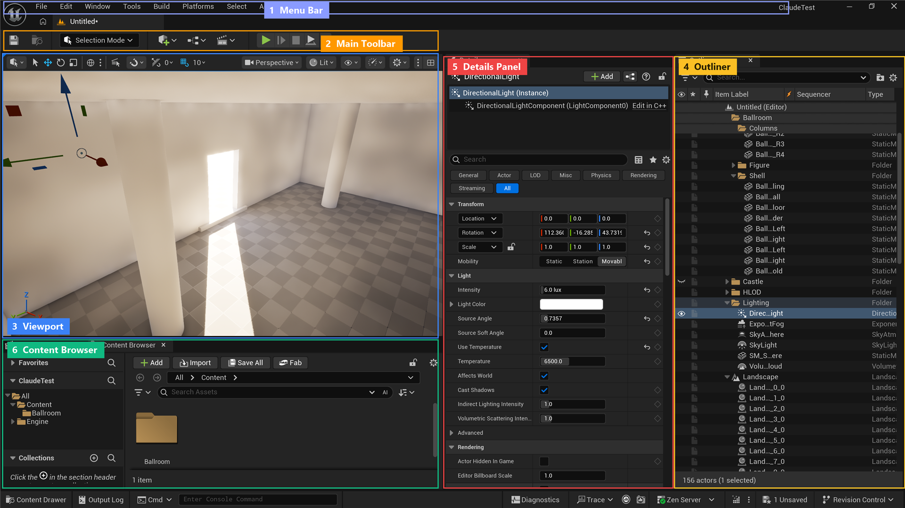

🎨 Your First Project
The moment has arrived—you're about to create your very first Unreal Engine project! This lesson guides you through choosing the right template, configuring project settings, and understanding how Unreal projects are structured. By the end, you'll have a working project open in the editor and ready for exploration.
🎯 Learning Objectives
By the end of this lesson, you will be able to:
- Understand the purpose and differences between project templates
- Choose the appropriate template for your learning goals
- Create a new Unreal Engine project with proper settings
- Navigate the Unreal Editor interface confidently
- Understand the folder structure and organization of Unreal projects
- Explore a basic level and interact with objects in the viewport
- Save your work and understand project file management
Estimated Time: 45-60 minutes
Prerequisites: Lesson 1.2: Installation and Setup (Unreal Engine installed)
In This Lesson
Introduction
Creating your first Unreal Engine project is an exciting milestone! Think of a project as a container for everything related to a particular game, application, or experience you're building—levels, assets, code, settings, and more. Every time you work in Unreal Engine, you're working within a project.
What Is a Project?
📖 Unreal Engine Project
A Project is a self-contained directory structure that holds all the content, code, configuration files, and settings for your game or application. Each project is completely independent—you can have multiple projects installed, and they don't interfere with each other.
A typical project contains:
Figure: The five main components of an Unreal Engine project.
- Content: 3D models, textures, materials, sounds, animations, Blueprints
- Levels (Maps): The 3D environments where your game takes place
- Code: Blueprints (visual scripts) and/or C++ code
- Configuration: Project settings, input mappings, game rules
- Build Files: Files needed to package and distribute your project
The Project Creation Process
Here's what we'll be doing in this lesson:
✅ Why This Matters
Understanding project creation and structure from the start helps you:
- Choose the right starting point for different types of projects
- Organize your work efficiently
- Collaborate with others more easily
- Troubleshoot issues when they arise
- Move between projects confidently
Understanding Project Templates
When you create a new project in Unreal Engine, you don't start with a completely blank slate. Instead, you choose from several project templates—pre-configured starting points that include relevant assets, settings, and example content tailored to specific use cases.
Why Templates Exist
Think of templates like home blueprints. You could design a house from scratch, figuring out plumbing, electrical, structural requirements—or you could start with a blueprint that already has those systems in place and customize from there. Templates save you hours (or days) of setup work.
Template Categories
Figure: Game template options—Third Person is recommended for beginners.
Unreal Engine organizes templates into several categories:
🎮 Games
Templates specifically designed for different types of games:
| Template | What It Includes | Best For |
|---|---|---|
| Blank | Minimal setup, empty level, basic lighting | Advanced users who want complete control; not recommended for beginners |
| First Person | Character controller, weapon mechanics, sample level with targets | FPS games, first-person experiences, shooter prototypes |
| Third Person | Character with over-shoulder camera, movement mechanics, sample level | Action games, adventure games, most beginner learning |
| Top Down | Isometric camera, click-to-move controls, sample level | Strategy games, MOBAs, classic RPGs |
| Side Scroller | 2D/2.5D character, side-view camera, platform mechanics | Platformers, side-scrolling games |
| Vehicle | Drivable vehicle, physics setup, test track | Racing games, vehicle-based gameplay |
| Puzzle | Grid-based mechanics, movable pieces, sample puzzles | Puzzle games, match-3 style games |
🎬 Film / Video & Live Events
Templates for cinematic production and virtual events:
- Virtual Production: LED wall tracking, camera systems for real-time filming
- DMX: Lighting control for live events and concerts
- nDisplay: Multi-screen setups for immersive installations
Note: These are specialized templates for professional production workflows—beginners typically skip these.
🏗️ Architecture
Templates for architectural visualization:
- Architectural Visualization: Pre-configured lighting, camera tools, and settings optimized for realistic building visualization
- Includes sample architectural environment to study
🚗 Automotive
Templates for vehicle visualization and configurators:
- Product Configurator: Interactive product showcase with customization options
- Optimized for real-time vehicle visualization and material swapping
Which Template Should You Choose?
✅ Recommended for Beginners
Use the Third Person template for your first project.
Here's why:
- ✅ Includes a fully functional character you can control immediately
- ✅ Camera system lets you see both your character and the environment
- ✅ Provides a complete sample level to explore
- ✅ Most tutorials and learning resources assume Third Person
- ✅ Teaches fundamental concepts applicable to any game type
- ✅ Not too simple (like Blank) or too complex (like Vehicle)
Once you're comfortable with the basics, you can experiment with other templates.
💡 Template Comparison: Blank vs. Third Person
Blank Template:
- Empty level with basic sky and floor
- No character or controls
- You build everything from scratch
- ⚠️ Overwhelming for beginners—lots of setup required
Third Person Template:
- Complete level with platforms, ramps, and structures
- Character with movement, jumping, camera controls
- Example content showing best practices
- ✅ Perfect for learning—see how things work, then customize
Starter Content: To Include or Not?
When creating a project, you'll see an option for Starter Content. This includes:
- Sample materials (wood, metal, concrete, etc.)
- Basic props (chairs, tables, simple meshes)
- Particle effects (fire, smoke, sparks)
- Audio files (footsteps, impacts)
- Example textures and blueprints
✅ Recommendation: Include Starter Content
For learning projects, always include Starter Content. It gives you materials and assets to experiment with immediately, and many tutorials reference these assets. You can always exclude it later for production projects where you'll use custom assets.
Creating Your First Project
Enough theory—let's actually create your first project! Follow these steps carefully.
🎨 Step-by-Step Project Creation
Step 1: Launch Unreal Engine
- Open the Epic Games Launcher
- Go to Unreal Engine → Library
- Click Launch on your installed engine version
- Wait for the Unreal Project Browser to appear
Step 2: Navigate to Games Category
- In the Project Browser, you'll see several category tabs at the top
- Click on Games (should be selected by default)
- You'll see template cards: Blank, First Person, Third Person, etc.
Step 3: Select Third Person Template
- Click on the Third Person template card
- The template will be highlighted with a blue border
- A preview image shows what the template includes
Step 4: Configure Project Settings (Right Panel)
On the right side of the window, you'll see project configuration options:
Blueprint or C++?
- Select Blueprint (the default)
- Blueprint is visual scripting—perfect for beginners
- C++ is for advanced users with programming experience
Target Platform:
- Keep Desktop selected
- This optimizes the project for PC/Mac development
- You can add mobile support later if needed
Quality Preset:
- Maximum: Best visual quality, requires powerful PC
- Scalable: Good balance, adjusts to your hardware (recommended)
- For learning, either option works—choose based on your system specs
Raytracing:
- Leave disabled unless you have a high-end RTX GPU
- Raytracing provides realistic reflections/lighting but is very demanding
- You can enable it later if your system supports it
Starter Content:
- ✅ Check this box to include Starter Content
- As discussed earlier, this gives you sample assets to learn with
Step 5: Choose Project Location and Name
At the bottom of the window:
Project Location:
- Click Browse to choose where to save your project
- Default:
Documents/Unreal Projects/ - 💡 Tip: If you have an SSD, save projects there for best performance
- Each project needs 2-10 GB of space depending on content
Project Name:
- Enter a name for your project (e.g., "MyFirstProject" or "LearningUnreal")
- Rules: No spaces (use underscores or CamelCase), no special characters
- Good names: MyFirstProject, Learning_Unreal, TestProject01
- Bad names: My Project, Test!, 123Project
Step 6: Create the Project!
- Review your settings one more time
- Click the large Create button at the bottom-right
- Unreal Engine will now:
- Create the project folder structure
- Copy template files
- Generate configuration files
- Compile shaders for your hardware
- Load the project into the editor
- ⏱️ This takes 2-5 minutes on first project creation
⚠️ First Project Takes Longer
The first time you create a project in a new engine version, it takes longer because Unreal Engine must:
- Compile thousands of shaders optimized for your specific GPU
- Build asset caches
- Initialize the editor for the first time
You'll see a progress bar with "Compiling Shaders" — this is normal! Future projects will create much faster.
What Happens During Project Creation?
While you wait, here's what's happening behind the scenes:
- Folder Creation: Creates the project directory with proper structure
- Template Copy: Copies template-specific content (character, level, etc.)
- Configuration: Generates .uproject file and config files for your settings
- Shader Compilation: Compiles rendering shaders for your GPU (longest step)
- Asset Registry: Indexes all content files for quick searching
- Editor Launch: Opens the Unreal Editor with your new project loaded
Project Settings Explained
Let's take a deeper look at the project settings you just configured and what they actually mean for your development experience.
Blueprint vs. C++: Understanding the Difference
📖 Blueprints
Blueprints are Unreal Engine's visual scripting system. Instead of writing code as text, you create logic by connecting nodes in a graph. It's like flowcharting—you can see the logic flow visually.
Figure: Blueprint is recommended for beginners—you can add C++ later when needed.
| Aspect | Blueprint | C++ |
|---|---|---|
| Learning Curve | Beginner-friendly, visual, intuitive | Requires programming knowledge, steep learning curve |
| Speed | Rapid prototyping, instant testing | Requires compilation, longer iteration times |
| Performance | Good for most game logic | Better for performance-critical code |
| Debugging | Visual debugging, easy to follow logic | Traditional debugger, text-based |
| Best For | Game logic, UI, gameplay mechanics, level scripting | Engine systems, complex algorithms, optimization |
✅ Can You Mix Blueprint and C++?
Yes! Professional studios often use both:
- C++ for core systems (AI, physics, networking)
- Blueprints for game-specific logic (UI, level scripting, one-off mechanics)
You can start with Blueprint and add C++ later when you need it. Many successful games are built entirely in Blueprints.
Target Platform Settings
The target platform setting optimizes your project for specific devices:
- Desktop: Windows, Mac, Linux PCs—no mobile-specific features
- Mobile: iOS and Android—lighter assets, touch controls, reduced graphical features
- Console: PlayStation, Xbox, Nintendo Switch—platform-specific optimizations
Can you change this later? Yes! Platform support can be added anytime through Project Settings. Start with Desktop for learning.
Quality Presets: Maximum vs. Scalable
| Preset | What It Does | When to Use |
|---|---|---|
| Maximum | Enables all visual features at highest settings: Lumen, Nanite, high-res textures, advanced post-processing | High-end PC (RTX 3060+, 16+ GB RAM), architectural visualization, cinematics |
| Scalable | Balanced settings that adapt to hardware; can scale down for lower-end systems | Most game development, learning, targeting a range of PC specs |
💡 What "Scalable" Actually Means
Scalable doesn't mean "low quality"—it means your project can adjust quality based on the hardware it's running on. Think of it like how modern games have Low/Medium/High/Ultra graphics settings. With Scalable preset:
- High-end PCs get beautiful visuals
- Mid-range PCs get good visuals with good performance
- Lower-end PCs can still run the game with reduced settings
For game development, Scalable is almost always the right choice.
Raytracing: Do You Need It?
Raytracing provides ultra-realistic lighting, reflections, and shadows by simulating how light actually bounces in the real world. However:
- Hardware Requirements: Needs RTX 2060 or better (NVIDIA), RX 6600 XT or better (AMD)
- Performance Cost: Can cut frame rates in half or more
- Learning Impact: Minimal—UE5's Lumen system provides excellent lighting without raytracing
✅ Recommendation: Leave Raytracing Off
For learning Unreal Engine, disable raytracing unless you have a very high-end system. UE5's default lighting (Lumen) is already impressive and doesn't require special hardware. You can enable raytracing later when you understand lighting fundamentals.
Project Folder Structure
Now that your project is created, let's look at what was actually generated on your hard drive. Understanding the folder structure helps you stay organized and know where to find things as your project grows.
Where Is Your Project?
Your project lives in the location you specified during creation, typically something like:
C:\Users\YourName\Documents\Unreal Projects\MyFirstProject\
Let's explore what's inside this folder.
Top-Level Folder Structure
When you navigate to your project folder in Windows Explorer or Finder, you'll see:
Figure: Project folder structure—Content is where you work, Intermediate can be deleted to save space.
Essential Folders Explained
| Folder/File | Purpose | Should You Edit? |
|---|---|---|
| .uproject file | Project definition file—double-click to open project | ❌ No (edit through editor) |
| Content/ | All your game assets: levels, blueprints, materials, textures, sounds, etc. | ✅ Yes (this is your workspace!) |
| Config/ | Configuration files for project settings, input mappings, game rules | ⚠️ Advanced users only (use Project Settings UI instead) |
| Saved/ | Autosaves, logs, screenshots, crash reports | ✅ Safe to browse; logs are useful for debugging |
| Intermediate/ | Temporary build files, cached data, compiled shaders | ❌ Never edit (can delete to rebuild caches) |
The Content Folder: Your Workspace
The Content folder is where you'll spend most of your time. It's organized into subfolders based on the template you chose:
- Maps/ (or Levels/): Your 3D environments
- ThirdPersonMap - The sample level that loads when you open the project
- ThirdPerson/ (template-specific folder):
- Blueprints/ - Character controller, game mode, etc.
- Input/ - Keyboard/controller mapping
- Meshes/ - 3D models for the character
- StarterContent/ (if you included it):
- Architecture/ - Walls, floors, sample building pieces
- Materials/ - Pre-made materials (wood, metal, etc.)
- Props/ - Furniture and objects
- Textures/ - Image files for materials
- Audio/ - Sound effects
- Particles/ - Visual effects (fire, smoke, etc.)
📖 Assets vs. Files
In Unreal Engine terminology, assets are the content files you work with (maps, materials, blueprints, textures, etc.). Each asset you see in the Content Browser corresponds to a .uasset file on disk. However, you rarely need to think about the file system—the Content Browser is your primary interface for managing assets.
Project Size Management
As you work, your project will grow. Here's typical size breakdown:
| Component | Initial Size | Grows Over Time? |
|---|---|---|
| Content/ (your assets) | 500 MB - 2 GB | ✅ Yes (as you add assets) |
| Saved/ (autosaves, logs) | 100-500 MB | ✅ Yes (can clean periodically) |
| Intermediate/ (build cache) | 1-5 GB | ✅ Yes (safe to delete and rebuild) |
✅ Pro Tip: Cleaning Up Space
If your project is taking too much disk space, you can safely delete the Intermediate/ and Saved/ folders. The engine will regenerate them when you next open the project. This can free up several gigabytes!
Warning: Only do this when the project is closed. Never delete the Content/ or Config/ folders!
The Unreal Editor Interface
When your project finishes loading, you'll see the Unreal Editor for the first time. It can look overwhelming at first, but it's organized logically once you understand what each section does.
Main Editor Layout
The editor consists of several main panels, each with a specific purpose:

Figure: The Unreal Editor 5.8 interface with its six key panels labeled · the Viewport (center) shows your 3D scene, the Outliner and Details panel sit on the right, and the Content Browser runs along the bottom.
Core Panels Explained
1. 🌍 Viewport (Center, Largest Panel)
The viewport is your window into the 3D world. This is where you'll see and interact with your level.
- Purpose: Visualize and navigate your 3D environment in real-time
- Controls:
- Right Mouse Button + WASD - Fly around like a first-person game
- Middle Mouse Button (or Alt + Left Mouse) - Rotate camera around a point
- Scroll Wheel - Zoom in/out
- F - Frame selected object (focus camera on it)
- Top-Right Options:
- Perspective/Orthographic: Switch view types
- Lit/Unlit/Wireframe: Change visualization mode
- Show: Toggle visibility of different element types
💡 Viewport Navigation Practice
Take a minute right now to practice moving around:
- Hold Right Mouse Button and move your mouse to look around
- While holding Right Mouse Button, use WASD to fly around
- Click on any object, then press F to focus on it
- Use Scroll Wheel to zoom in and out
This will feel natural after a few minutes of practice!
2. 📁 Content Browser (Bottom Panel)
The Content Browser is like Windows Explorer or Mac Finder, but specifically for game assets.
- Purpose: Browse, search, and manage all your project assets
- Features:
- Folder tree on left showing your Content/ folder structure
- Asset thumbnails in the main area
- Search bar to quickly find assets
- Right-click to create new assets
- Drag and drop to move/organize assets
- Common Actions:
- Double-click asset to open its editor
- Drag asset into viewport to place it in your level
- Right-click for context menu (duplicate, delete, rename, etc.)
3. 📋 World Outliner (Right Panel, Top)
The Outliner shows a hierarchical list of every object currently in your level.
- Purpose: See and select objects in your scene
- Features:
- Alphabetical list of all actors (objects) in the level
- Search bar to find specific objects
- Eye icon to show/hide objects
- Folder organization for complex scenes
- Usage:
- Click object name to select it (also selects in viewport)
- Use when you can't find or click an object in the viewport
- Organize large levels into folders
4. 🔧 Details Panel (Right Panel, Bottom)
The Details panel shows properties and settings for whatever is currently selected.
- Purpose: View and edit properties of selected objects
- What You'll See:
- Transform: Position, rotation, scale
- Rendering: How the object is displayed
- Collision: Physics and interaction settings
- Component-Specific Settings: Depends on what's selected
- Usage:
- Select object in viewport or Outliner
- Details panel updates to show that object's properties
- Modify values to change the object
Top Toolbar: Quick Actions
The toolbar at the very top provides quick access to common actions:
| Button/Section | Purpose | Shortcut |
|---|---|---|
| Save | Save current level and modified assets | Ctrl + S |
| Content | Opens Content Browser | Ctrl + Space |
| Fab | Browse Fab (fab.com), Epic's content library | - |
| Settings | Project Settings, Editor Preferences | - |
| Play (▶️) | Test your level in Play mode | Alt + P |
| Eject | Exit Play mode and return to editor | Esc |
| Build | Build lighting, navigation, etc. | - |
Customizing the Interface
The editor layout is fully customizable:
- Drag Tabs: Click and drag panel tabs to move them
- Dock Panels: Drag panels to edges to dock them in different positions
- Resize Panels: Drag panel borders to resize
- Close/Reopen Panels: Window menu → show/hide specific panels
- Save Layout: Window → Save Layout → give it a name
- Load Layout: Window → Load Layout → choose saved layout
✅ Recommended Beginner Layout
For learning, the default layout works great! Don't worry about customizing yet. As you gain experience, you'll discover what layout works best for your workflow.
If you accidentally close a panel, go to Window menu and re-enable it.
⚠️ Panel Accidentally Closed?
If you accidentally close the Content Browser, Outliner, or Details panel:
- Click Window in the top menu bar
- Find the panel name (e.g., "Content Browser", "Outliner")
- Click it to reopen
Or use Window → Load Layout → Default to reset everything.
Exploring Your First Level
With your project open and the editor interface familiar, let's explore the Third Person template level and see what's included.
What's In the Third Person Template?
The level that opens automatically is called ThirdPersonMap. It's a sample environment designed to showcase the template's features.
Key Elements in the Level
- 🏃 Player Start: A small icon showing where the player character spawns
- 🏗️ Platforms and Ramps: Geometry to demonstrate movement and jumping
- 🌤️ Sky and Lighting: Atmospheric lighting with clouds and sun
- 🎯 Example Props: Cubes, spheres, and architectural pieces
- 📷 Camera Setup: Third-person camera rig (part of character blueprint)
Playing Your Level
Let's test the level! This is one of the most exciting moments—seeing your project run for the first time.
🎮 How to Play Test
- Press the Play Button
- Look for the green ▶️ Play button in the top toolbar
- Or press Alt + P
- What Happens
- The viewport changes to "Play" mode
- A banner appears at the top showing "PIE" (Play In Editor)
- Your character spawns at the Player Start location
- You now have control!
- Controls (Default Third Person)
- W A S D - Move character
- Mouse Movement - Rotate camera
- Spacebar - Jump
- Shift - Sprint (if enabled in template)
- Exit Play Mode
- Press Esc to stop playing
- Or click the "Stop" button in the toolbar
- You'll return to the editor
✅ Try This Right Now!
Take 2-3 minutes to play test your level:
- Click Play (or Alt + P)
- Run around, jump on platforms, explore the space
- Notice how the camera follows the character
- Jump off the edge—what happens?
- Press Esc to return to the editor
Congratulations! You just played your first Unreal Engine project!
Selecting and Examining Objects
Now let's learn how to select and inspect objects in your level.
Selecting Objects in the Viewport
- Left-Click on any object in the viewport to select it
- Selected objects get a yellow/orange outline
- Details panel shows the object's properties
- Multiple Selection:
- Ctrl + Click - Add to selection
- Click + Drag - Box select multiple objects
- Deselect:
- Click on empty space in viewport
- Or press Esc
Understanding the Transform Gizmo
When you select an object, you'll see colorful arrows and arcs—this is the Transform Gizmo.
Figure: The three transform modes (Move, Rotate, Scale) with color-coded axes.
| Tool | Hotkey | What It Does | Visual |
|---|---|---|---|
| Move | W | Move object along X (red), Y (green), Z (blue) axes | Three arrows |
| Rotate | E | Rotate object around axes | Three colored arcs |
| Scale | R | Make object larger or smaller | Three arrows with cubes |
💡 Quick Exercise: Move a Cube
- Click on one of the cubes in the level to select it
- Press W to activate Move mode (if not already active)
- Click and drag the red arrow (X-axis) to move it left/right
- Click and drag the green arrow (Y-axis) to move it forward/back
- Click and drag the blue arrow (Z-axis) to move it up/down
- Press E to try Rotate mode
- Press R to try Scale mode
- Press Ctrl + Z to undo your changes
Examining Object Properties
With an object selected, look at the Details Panel on the right. You'll see sections like:
- Transform:
- Location: X, Y, Z coordinates in 3D space
- Rotation: Roll, pitch, yaw angles
- Scale: Size multiplier (1.0 = original size)
- Static Mesh: The 3D model being displayed
- Materials: What the surface looks like (color, texture, shininess)
- Collision: How physics interactions work
- Rendering: Display options, shadows, lighting
📖 Transform Coordinates
Unreal Engine uses a 3D coordinate system:
- X (Red): Forward/Backward (in Unreal's conventions)
- Y (Green): Left/Right
- Z (Blue): Up/Down
Think of it like a city: X is which street, Y is which avenue, Z is which floor of a building.
The Content Browser in Action
Let's explore the Content Browser to see what assets came with the template:
- Open Content Browser (bottom panel, or press Ctrl + Space)
- Navigate folders:
- Click Content in the folder tree (left side)
- Expand ThirdPerson folder
- Click Blueprints subfolder
- Find the Character Blueprint:
- Look for BP_ThirdPersonCharacter
- This is the character you control when playing
- Double-click to open it (we'll explore Blueprints in later lessons)
Placing Objects in the Level
One of the most fundamental skills is adding objects to your level.
🏗️ How to Place Objects
Method 1: From Content Browser
- Open Content Browser
- Navigate to Content → StarterContent → Props
- Find an asset (e.g., "SM_Chair")
- Click and drag from Content Browser into the viewport
- Release mouse button to place it
Method 2: Using Place Actors Panel
- Look for the Place Actors panel (usually left side)
- If not visible: Window → Place Actors
- Browse categories: Basic, Lights, Visual Effects, etc.
- Drag an actor (e.g., Cube or Sphere) into viewport
✅ Try It: Add a Cube to Your Level
- Open Place Actors panel (Window → Place Actors if not visible)
- Click on Basic category
- Find Cube
- Drag it into your level viewport
- Use the Move tool (W) to position it
- With cube selected, look at Details panel and change its scale to 2.0
- Congratulations—you just added your first object!
Saving Your Work
One of the most important habits to develop is saving your work regularly. Unreal Engine has several save mechanisms, and understanding them prevents data loss and keeps your project organized.
Types of Saves in Unreal Engine
Unreal Engine has different save operations for different purposes:
Figure: The three save methods—use Ctrl+S frequently and Ctrl+Shift+S before testing.
| Save Type | What It Saves | Shortcut | When to Use |
|---|---|---|---|
| Save Current | Only the currently open asset or level | Ctrl + S | Quick save while working on a specific asset |
| Save All | All modified assets and levels | Ctrl + Shift + S | Before testing, before closing editor, end of work session |
| Auto-Save | Automatic periodic backup | - | Happens automatically (default: every 5-10 minutes) |
How to Save Properly
💾 Saving Best Practices
Method 1: Quick Save (Recommended)
- Press Ctrl + S to save the current level/asset
- A small notification appears confirming the save
- Fast and efficient for frequent saves
Method 2: Save All (Before Testing/Closing)
- Press Ctrl + Shift + S or click File → Save All
- A dialog shows all modified files
- Review the list and check what you want to save
- Click "Save Selected" to save chosen files
Method 3: Menu Bar
- Click File in the top menu
- Choose:
- Save Current Level - saves the open map
- Save All - saves everything
- Save Current As - creates a copy with a new name
Understanding Auto-Save
Auto-save is your safety net. It creates periodic backups of your work automatically.
- How It Works:
- Saves backup copies at regular intervals (default: 5-10 minutes)
- Backups stored in:
Saved/Backup/folder - Keeps multiple versions (usually last 3-5 auto-saves)
- When It Saves:
- Only when you've made changes
- Not while playing/testing
- Shows a brief notification when saving
- Recovering Auto-Saved Work:
- File → Open Recent → check for auto-saved versions
- Or browse:
YourProject/Saved/Backup/
✅ Verify Auto-Save Is Enabled
Check if auto-save is active:
- Go to Edit → Editor Preferences
- Navigate to General → Loading & Saving
- Look for "Enable AutoSave"
- Make sure it's checked ✅
- Set interval to 5 or 10 minutes
What Gets Saved?
When you save, different types of data are saved:
- ✅ Saved:
- Level/map changes (object positions, properties, deletions/additions)
- Asset modifications (materials, blueprints, textures)
- Project settings changes
- ❌ NOT Saved:
- Editor layout and panel positions (saved separately)
- Play session progress (testing is temporary)
- Undo/redo history (resets when you close and reopen)
Saving Modified vs. Creating New
Understanding the difference between modifying existing assets and creating new ones:
| Action | What Happens | Example |
|---|---|---|
| Modify Existing | Changes the original file | Move a cube in your level → Save overwrites the level file |
| Save As (Copy) | Creates a new file, keeps original | File → Save Current As → Creates level_copy while keeping original |
| Duplicate Asset | Right-click in Content Browser → Duplicate | Duplicate a material to create variations |
⚠️ Save Before These Actions
Always save before:
- Testing/Playing: Changes during play are temporary—save first!
- Closing the Editor: Unreal will prompt you, but save proactively
- Building Lighting: Can take a while, save your work first
- Importing Large Assets: In case something goes wrong
- Making Major Changes: Save a backup version first
Version Control Basics
For solo projects, manual backups are often sufficient. For teams or important projects, consider version control:
- Manual Backups:
- Copy entire project folder to another location periodically
- Name with dates:
MyProject_2024_11_25 - Simple but effective for learning projects
- Version Control Systems:
- Perforce: Industry standard for game development (advanced)
- Git with Git LFS: Popular, free, handles large files
- Plastic SCM: Beginner-friendly alternative
- Cloud Storage:
- Dropbox, Google Drive, OneDrive can work for small projects
- ⚠️ Can be slow with large projects
- ⚠️ May have sync conflicts with binary files
💡 Beginner Backup Strategy
For learning projects, use this simple approach:
- Save frequently: Ctrl + S every few minutes
- Save all before closing: Ctrl + Shift + S when ending session
- Weekly backup: Copy entire project folder to external drive or cloud once a week
- Before major changes: Duplicate the project folder first
This simple system prevents 99% of data loss scenarios!
Recovering From Crashes
If Unreal Engine crashes unexpectedly:
- Don't Panic: Auto-save probably captured recent work
- Reopen Project: Launch Unreal Engine and open your project normally
- Check for Auto-Saved Version:
- Unreal may prompt you to restore from auto-save
- Click "Restore" to recover
- Manual Recovery:
- Navigate to
YourProject/Saved/Backup/ - Look for recent
.umapfiles (levels) - Copy them to
Content/Maps/and rename
- Navigate to
- Review Logs:
- Crash logs in
Saved/Logs/ - Can help identify why crash occurred
- Crash logs in
Summary
Congratulations! You've successfully created your first Unreal Engine project and learned the fundamentals of the editor interface. This is a huge milestone in your Unreal Engine journey!
🎉 Key Takeaways
- Project Templates provide pre-configured starting points for different project types. The Third Person template is ideal for beginners because it includes a functional character and sample level.
- Project Creation Settings: Choose Blueprint (not C++), Desktop platform, Scalable quality, and include Starter Content for learning projects.
- Project Structure: Content/ folder holds all your assets, Config/ stores settings, Saved/ contains backups, and Intermediate/ holds build cache.
- Editor Interface: Four main panels—Viewport (3D view), Content Browser (asset library), Outliner (object list), and Details Panel (properties).
- Viewport Navigation: Right-click + WASD to fly, middle-mouse to orbit, F to frame selected object.
- Transform Tools: W for Move, E for Rotate, R for Scale. Color-coded axes: Red (X), Green (Y), Blue (Z).
- Play Testing: Alt + P to play, Esc to stop. Test your level frequently to see how changes feel.
- Placing Objects: Drag from Content Browser or Place Actors panel into viewport.
- Saving: Ctrl + S saves current, Ctrl + Shift + S saves all. Auto-save runs in background. Save before testing!
📚 What You've Accomplished
In this lesson, you've learned to:
| Skill | Why It's Important |
|---|---|
| Choose and create appropriate projects | Foundation for all future Unreal work |
| Navigate the editor interface confidently | Essential for productive workflow |
| Use viewport controls to explore 3D space | Core skill for level design and scene building |
| Select and manipulate objects | Fundamental to creating and editing content |
| Understand project organization | Keeps projects manageable as they grow |
| Save work properly | Prevents data loss and maintains project integrity |
🚀 What's Next?
Now that you have a project and understand the editor basics, the next lesson will dive deeper into the interface itself. You'll learn:
- A complete tour of the Unreal Editor interface and its components
- Advanced viewport controls and visualization modes
- How to customize the editor layout for your workflow
- Essential keyboard shortcuts that speed up development
- Using the Content Browser effectively
- Understanding the World Outliner and organizing complex scenes
- The Details Panel in-depth—modifying object properties
🎉 You Did It!
You've created your first Unreal Engine project and taken your first steps in 3D game development! Every expert started exactly where you are now. Keep practicing, stay curious, and don't be afraid to experiment!
💪 Practice Challenges
Before moving to the next lesson, reinforce your skills with these challenges:
🏋️ Challenge 1: Navigation Master
Goal: Become comfortable with viewport navigation
- Fly around the entire level using right-click + WASD
- Select various objects and press F to frame them
- Practice orbiting around objects with middle-mouse button
- Zoom in very close and very far from objects
Success: You can navigate smoothly without thinking about controls
🏋️ Challenge 2: Build a Simple Structure
Goal: Practice placing and transforming objects
- Open Place Actors panel (Window → Place Actors)
- Add 5 cubes to your level in different positions
- Use Move (W), Rotate (E), and Scale (R) to arrange them into a simple structure
- Try to create stairs, a tower, or an archway
- Save your work when done
Success: You've created a recognizable structure from basic shapes
🏋️ Challenge 3: Explore Starter Content
Goal: Familiarize yourself with available assets
- Open Content Browser
- Navigate to Content → StarterContent
- Browse each subfolder: Architecture, Materials, Props, etc.
- Drag 3-5 different props into your level
- Experiment with their placement and scale
- Play test to see your additions in action
Success: You know where to find assets and can place them confidently
🏋️ Challenge 4: Practice Saving
Goal: Make saving a habit
- Make some changes to your level (move objects, add new ones)
- Practice: Press Ctrl + S to quick save
- Make more changes
- Practice: Press Ctrl + Shift + S to save all
- Close and reopen your project
- Verify all changes were saved
Success: You're saving regularly without thinking about it
🤔 Common Questions
Q: Can I change my project settings after creation?
Yes! Go to Edit → Project Settings to modify most settings. Some settings (like project name) are harder to change, but technical settings can be adjusted anytime.
Q: What if I chose the wrong template?
You can either: (1) Create a new project with the correct template, or (2) Manually add/remove template content. For beginners, it's often easier to create a new project.
Q: How do I open a different level/map?
File → Open Level, or double-click a map asset in the Content Browser (maps are in Content/Maps folder).
Q: Can I have multiple projects?
Absolutely! Each project is independent. You can create as many as you want. Just be mindful of disk space—each project is 2-10+ GB.
Q: Why does my editor look different from tutorials?
Editor layouts can be customized, and Unreal updates change the interface. The core panels (Viewport, Content Browser, Details) are always there, just maybe in different positions. You can customize your layout in the Window menu.
📖 Additional Resources
- Official Documentation: Unreal Editor Interface Guide
- Video Tutorials: Search for "Unreal Engine 5 Interface Tour" on YouTube
- Community Forums: Unreal Engine Forums
- Quick Reference: Keyboard Shortcuts